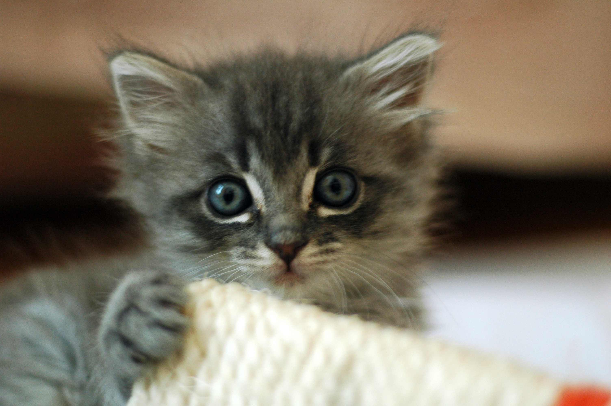

Ronie Antonio
Welcome to my website, friends. My name is Ronie Antonio, or if you prefer calling me by my online alias, name's Fantom. I'm currently studying at UC Santa Cruz for my AGPM (Game Design: Art) major and a possible CS minor. I consider myself to be an avid artist, gamer (both casual and proffesional), and guide-maker.
I've always enjoyed playing video games, enjoying aspects ranging from its gameplay, to visual aesthetics, to its storytelling, and even its accesssibility to the player base. I love games, and I love creating art. That's why I'm an AGPM major to begin with.

About Me
Tell us about yourself. Add photos. Customize this. Go crazy.